Transposed卷积（解卷积）
对于许多应用程序和在许多网络架构中，我们经常希望进行与正常卷积相反方向的转换，即我们希望执行上采样。一些示例包括生成高分辨率图像并将低维特征映射到高维空间，例如自动编码器或语义分割。（在后面的示例中，语义分割首先在编码器中提取要素图，然后在解码器中恢复原始图像大小，以便它可以对原始图像中的每个像素进行分类。）
传统上，可以通过应用插值方案或手动创建规则来实现上采样。另一方面，诸如神经网络之类的现代架构倾向于让网络本身自动地学习正确的转换，而无需人为干预。为此，我们可以使用转置卷积。
转置卷积在文献中也称为反卷积或分数跨步卷积。然而，值得注意的是，“反卷积”这个名称不太合适，因为转置卷积不是信号/图像处理中定义的真实反卷积。从技术上讲，信号处理中的反卷积会逆转卷积运算。这里情况不同。因此，一些作者强烈反对将转置卷积称为反卷积。人们称它为反卷积主要是因为简单。稍后，我们将看到为什么将这种操作称为转置卷积是自然而且更合适的。
始终可以使用直接卷积实现转置卷积。对于下图中的示例，我们使用3 x 3内核在2 x 2输入上应用转置卷积，使用单位步幅填充2 x 2边框。上采样输出的大小为4 x 4。
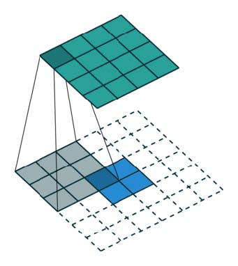
有趣的是，通过应用花式填充和不同步幅，可以将相同的2 x 2输入图像映射到不同的图像大小。下面，转置卷积应用于相同的2 x 2输入（在输入之间插入1个0），使用单位步幅填充2 x 2边界的零。现在输出的大小为5 x 5。
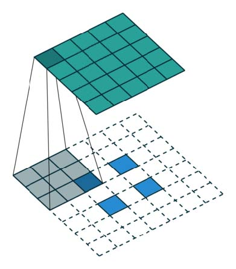
在上面的例子中查看转置卷积可以帮助我们建立一些直觉。但是为了概括其应用，通过计算机中的矩阵乘法来研究它是如何实现的是有益的。从那里，我们也可以看到为什么“转置卷积”是一个合适的名称。
在卷积中，让我们定义C作为我们的内核，Large作为输入图像，Small作为来自卷积的输出图像。在卷积（矩阵乘法）之后，我们将大图像下采样为小的输出图像。矩阵乘法中的卷积的实现遵循C x Large = Small。
以下示例显示了此类操作的工作原理。它将输入Reshape为16 x 1矩阵，并将内核转换为稀疏矩阵（4 x 16）。然后在稀疏矩阵和有效输入之间应用矩阵乘法。之后，将得到的矩阵（4×1）转换回2×2输出。
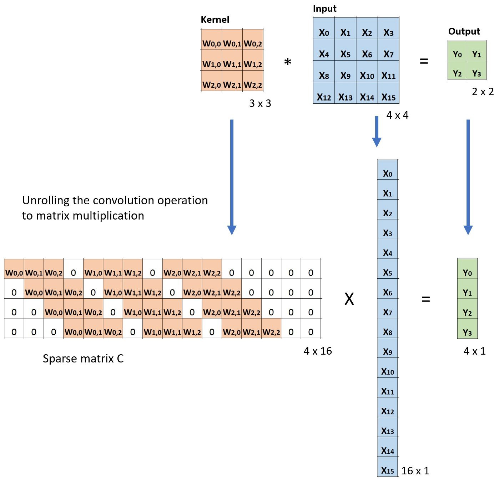
现在，如果我们在方程的两边多重矩阵CT的转置，并使用矩阵与其转置矩阵的乘法给出单位矩阵的属性，那么我们有以下公式CT x Small = Large，如下所示下面的图片：
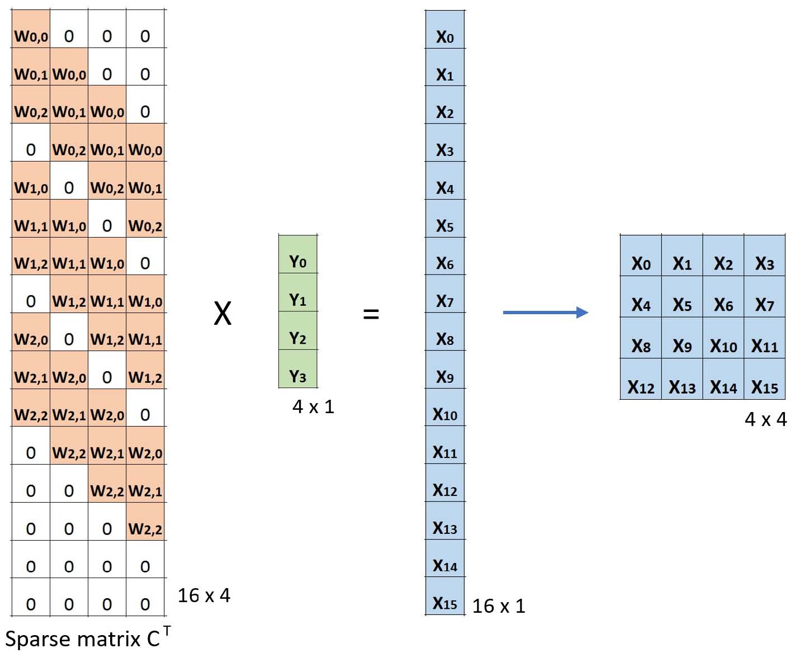
正如您在此处所看到的，我们执行从小图像到大图像的上采样。这就是我们想要实现的目标。现在，您还可以看到“转置卷积”这个名称的来源。
棋盘效应
人们在使用转置卷积时观察到的一种令人不快的行为是所谓的棋盘格伪影。
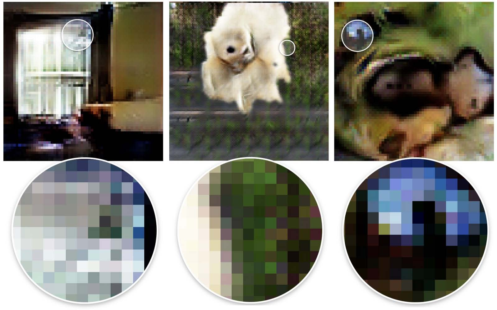
该论文《Deconvolution and Checkerboard Artifacts》大约有此行为的精彩描述。有关更多详细信息，请查看此文章。在这里，我只概括几个要点。
棋盘伪影是由转置卷积的“不均匀重叠”引起的。这种重叠使得更多的隐喻性绘画在某些地方比其他地方更多。
在下图中，顶部的图层是输入图层，底部的图层是转置卷积后的输出图层。在转置卷积期间，具有较小尺寸的层被映射到具有较大尺寸的层。
在示例（a）中，步幅为1且filer大小为2.如红色所示，输入上的第一个像素映射到输出上的第一个和第二个像素。如绿色所示，输入上的第二个像素映射到输出上的第二个和第三个像素。输出上的第二个像素从输入上的第一个和第二个像素接收信息。总的来说，输出中间部分的像素从输入端接收相同数量的信息。这里存在核心重叠的区域。由于在示例（b）中过滤器尺寸增加到3，所以接收最多信息的中心部分收缩。但这可能不是什么大问题，因为重叠仍然是均匀的。输出中心部分的像素从输入接收相同数量的信息。
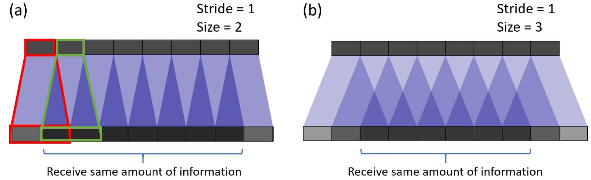
现在，对于下面的示例，我们更改stride = 2.在示例（a）中，filter size = 2，输出上的所有像素都从输入接收相同数量的信息。它们都从输入上的单个像素接收信息。这里没有转置卷积的重叠。
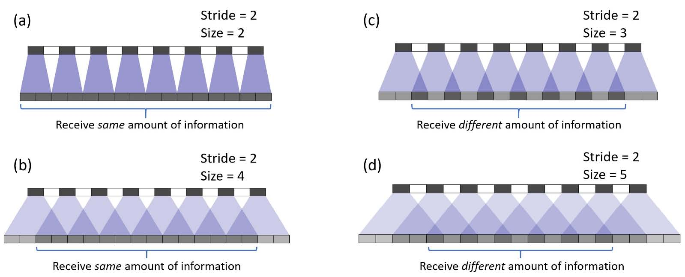
如果我们在示例（b）中将filter大小更改为4，则均匀重叠的区域会缩小。但是，仍然可以使用输出的中心部分作为有效输出，其中每个像素从输入接收相同数量的信息。
然而，如果我们在示例（c）和（d）中将filter大小更改为3和5，则事情变得有趣。对于这两种情况，输出上的每个像素与其相邻像素相比接收不同量的信息。人们无法在输出上找到连续且均匀重叠的区域。
当过滤器大小不能被步幅整除时，转置的卷积具有不均匀的重叠。这种“不均匀的重叠”使得更多的油漆在某些地方比其他地方更多，从而产生了棋盘效果。事实上，不均匀重叠的区域在两个维度上往往更加极端。在那里，两个模式相乘，不均匀性得到平方。
在应用转置卷积时，可以做两件事来减少这种伪影。首先，确保使用按步幅划分的filer大小，避免重叠问题。其次，可以使用stride = 1的转置卷积，这有助于减少棋盘格效果。然而，正如许多最近的模型中所见，工件仍然可以泄漏。
所述论文进一步提出了更好的上采样的方法：首先调整图像的大小（使用最近邻插值或双线性插值），然后执行一个卷积层。通过这样做，作者避免了棋盘格效应。您可能想要为您的应用程序尝试它。
扩张卷积（Atrous Convolution）
扩张卷积在论文和论文《Multi-scale context aggregation by dilated convolutions》中引入。
这是标准的离散卷积：
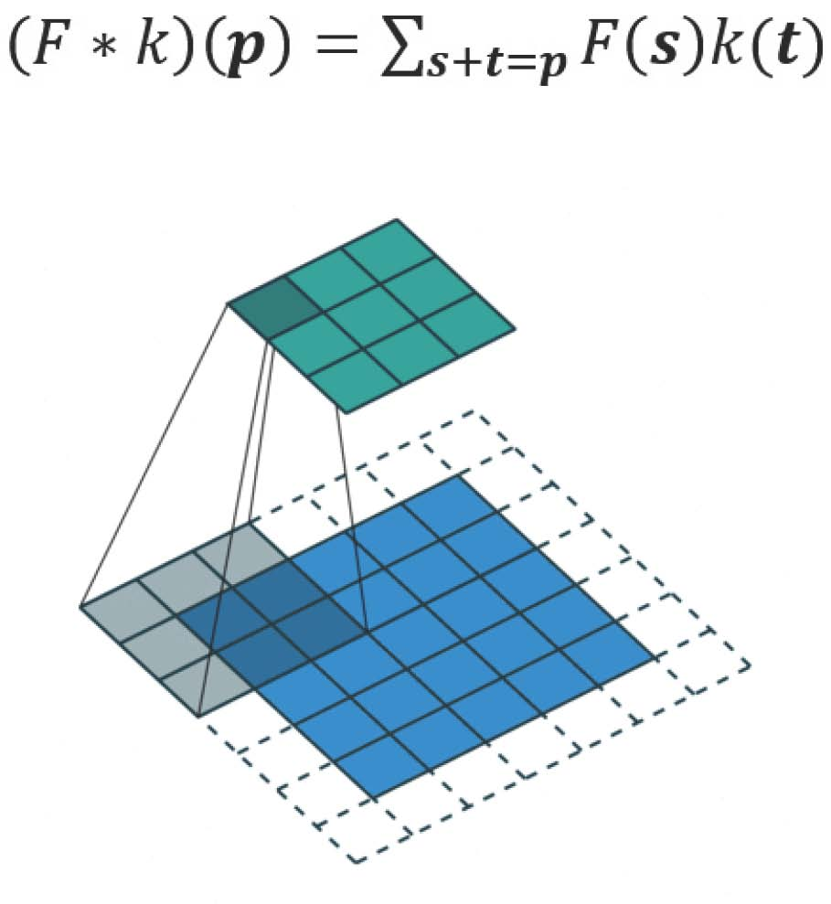
扩张的卷积如下：
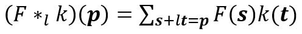
当l = 1时，扩张卷积变为标准卷积。
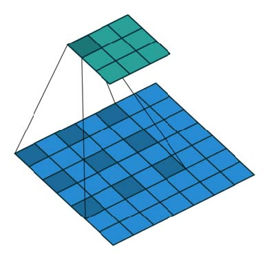
直观地说，扩张的卷积通过在内核元素之间插入空格来“扩展”内核。这个附加参数l（扩张率）表示我们想要扩展内核的程度。实现可能会有所不同，但内核元素之间通常会插入l-1个空格。下图显示了l = 1,2和4时的内核大小。
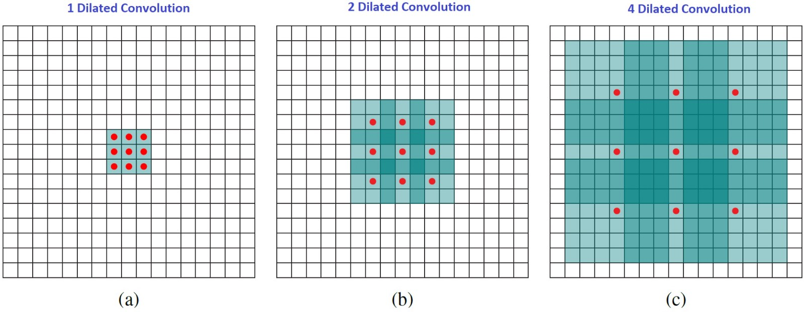
在图像中，3×3个红点表示在卷积之后，输出图像具有3×3像素。尽管所有三个扩张的卷积都为输出提供了相同的尺寸，但模型观察到的感受野却非常不同。接受率为3 x 3，l = 1。l = 2时为7 x 7。对于l = 3，感受野增加到15 x 15.有趣的是，与这些操作相关的参数数量基本相同。我们“观察”一个大的感受野而不增加额外的成本。因此，扩张卷积用于廉价地增加输出单元的感受野而不增加核尺寸，这在多个扩张的卷积一个接一个地堆叠时尤其有效。
文章“Multi-scale context aggregation by dilated convolutions”的作者在多层扩张卷积中构建了一个网络，其中扩张率l在每一层呈指数增长。结果，有效的感受野呈指数增长，而参数的数量只随着层线性增长！本文中的扩张卷积用于系统地聚合多尺度上下文信息而不会丢失分辨率。本文表明，所提出的模块提高了当时最先进的语义分割系统的准确性（2016）。请查看论文以获取更多信息。
分离卷积
可分离的卷积用于一些神经网络体系结构，例如MobileNet。可以在空间上（空间可分离卷积）或深度（深度可分离卷积）上执行可分离卷积。
空间可分离的卷积
空间可分离卷积在图像的2D空间维度上操作，即高度和宽度。从概念上讲，空间可分离卷积将卷积分解为两个单独的操作。对于下面显示的示例，Sobel内核（3x3内核）被划分为3x1和1x3内核。
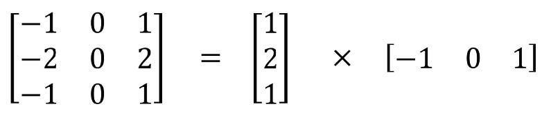
在卷积中，3x3内核直接与图像卷积。在空间可分离的卷积中，3x1内核首先与图像卷积。然后应用1x3内核。在执行相同操作时，这将需要6个而不是9个参数。
此外，在空间上可分离的卷积中需要比标准卷积更少的矩阵乘法。对于一个具体的例子，在具有3×3内核（stride = 1，padding = 0）的5×5图像上的卷积需要在水平3个位置（和垂直3个位置）扫描内核。总共9个位置，如下图所示。在每个位置，应用9个元素乘法。总的来说，这是9 x 9 = 81次乘法。
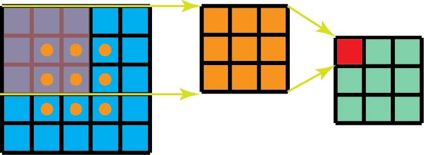
另一方面，对于空间可分离的卷积，我们首先在5 x 5图像上应用3 x 1 filter。我们在水平5个位置和垂直3个位置扫描这样的内核。总共5 x 3 = 15个位置，如下图所示。在每个位置，应用3个元素乘法。那是15 x 3 = 45次乘法。我们现在获得了3 x 5矩阵。此矩阵现在与1 x 3内核进行卷积，内核在水平3个位置和垂直3个位置扫描矩阵。对于这9个位置中的每一个，应用3个元素乘法。此步骤需要9 x 3 = 27次乘法。因此，总体而言，空间可分离卷积需要45 + 27 = 72次乘法，这小于标准卷积所需次数。
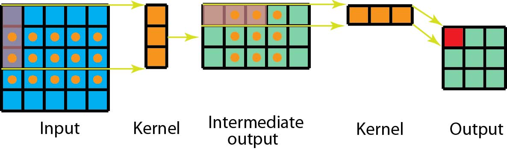
让我们稍微扩展一下上面的例子。假设我们现在在带有m x m大小内核的N x N图像上应用卷积，其中stride = 1且padding = 0。传统的卷积需要（N-2）x（N-2）x m x m乘法。空间可分离卷积需要N x（N-2）x m +（N-2）×（N-2）× m =（2N-2）×（N-2）× m 次乘法。空间可分卷积与标准卷积之间的计算成本比率为：
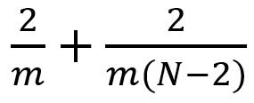
对于图像尺寸N远大于filter尺寸m（N >> m）的层，该比率变为2 / m。这意味着在这种渐近情况下（N >> m），空间可分卷积的计算成本是3 x 3 filter的标准卷积的2/3。5 x 5 filter为2/5，7 x 7 filter为2/7，依此类推。
虽然空间可分离的卷积可以节省成本，但很少用于深度学习。其中一个主要原因是并非所有内核都可以分为两个较小的内核。如果我们通过空间可分的卷积替换所有传统的卷积，我们限制自己在训练期间搜索所有可能的核。训练结果可能不是最佳的。
深度可分离的卷积
现在，让我们转到深度可分离卷积，这在深度学习中更常用（例如在MobileNet和Xception中）。深度可分离的旋转包括两个步骤：深度卷积和1x1卷积。
在描述这些步骤之前，值得重新审视我之前部分中讨论的2D卷积和1 x 1卷积。让我们快速回顾一下标准2D卷积。举一个具体的例子，假设输入层的大小为7 x 7 x 3（高x宽x通道），并且过滤器大小为3 x 3 x 3.在使用一个过滤器进行2D卷积后，输出层为尺寸为5 x 5 x 1（仅有1个通道）。
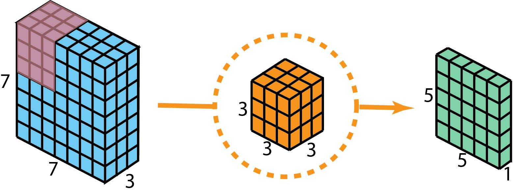
通常，在两个神经网络层之间应用多个过滤器。假设我们这里有128个过滤器。在应用这128个2D卷积后，我们有128个5 x 5 x 1输出映射。然后我们将这些地图堆叠成一个大小为5 x 5 x 128的单层。通过这样做，我们将输入层（7 x 7 x 3）转换为输出层（5 x 5 x 128）。空间尺寸，即高度和宽度，缩小，而深度延长。
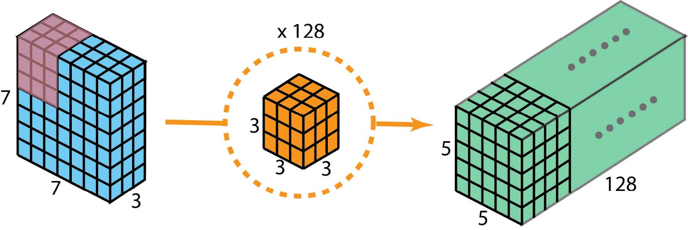
现在有了深度可分离的卷积，让我们看看我们如何实现相同的转换。
首先，我们将深度卷积应用于输入层。我们不是在2D卷积中使用尺寸为3 x 3 x 3的单个过滤器，而是分别使用3个内核。每个lter的大小为3 x 3 x 1.每个内核与输入层的1个通道进行卷积（仅1个通道，而不是所有通道！）。每个这样的卷积提供尺寸为5×5×1的图。然后我们将这些图堆叠在一起以创建5×5×3图像。在此之后，我们的输出尺寸为5 x 5 x 3.我们现在缩小空间尺寸，但深度仍然与以前相同。
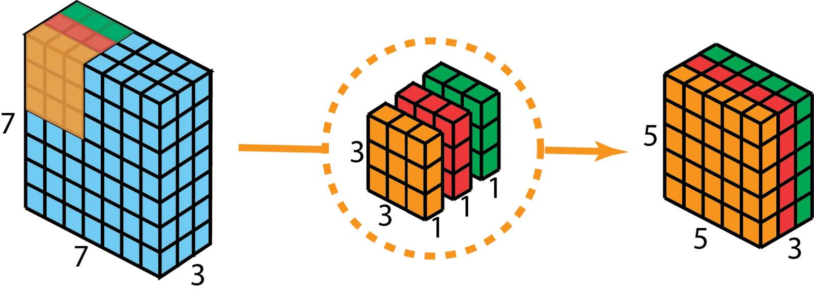
作为深度可分离卷积的第二步，为了扩展深度，我们应用1x1卷积，内核大小为1x1x3。将5 x 5 x 3输入图像与每个1 x 1 x 3内核进行对比，得到5x5x1大小的特征图。
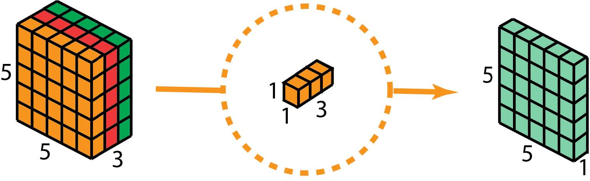
因此，在应用128个1x1卷积后，我们可以得到一个尺寸为5 x 5 x 128的层。
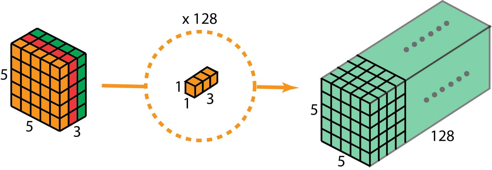
通过这两个步骤，深度可分离卷积还将输入层（7 x 7 x 3）转换为输出层（5 x 5 x 128）。
深度可分离卷积的整个过程如图所示
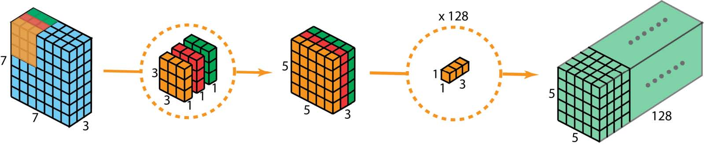
那么，深度可分离卷积的优势是什么？高效！与2D卷积相比，对于深度可分离卷积，需要更少的操作。
让我们回顾一下2D卷积示例的计算成本。有128个3x3x3内核移动5x5次。这是128 x 3 x 3 x 3 x 5 x 5 = 86,400次乘法。
可分离的卷积怎么样？在第一个深度卷积步骤中，有3个3x3x1内核移动5x5次。那是3x3x3x1x5x5 = 675次乘法。在1 x 1卷积的第二步中，有128个1x1x3内核移动5x5次。这是128 x 1 x 1 x 3 x 5 x 5 = 9,600次乘法。因此，总体而言，深度可分离卷积需要675 + 9600 = 10,275次乘法。这只是2D卷积成本的12％左右！
因此，对于具有任意大小的图像，如果我们应用深度可分离卷积，我们可以节省多少时间。让我们稍微概括一下上面的例子。现在，对于大小为H x W x D的输入图像，我们想要使用大小为h x h x D的Nc内核进行2D卷积（stride = 1，padding = 0），其中h是偶数。这将输入层（H x W x D）变换为输出层（H-h + 1×W-h + 1×Nc）。所需的总体乘法是
Nc x h x h x D x（H-h + 1）x（W-h + 1）
另一方面，对于相同的变换，深度可分离卷积所需的乘法是
D x h x h x 1 x（H-h + 1）x（W-h + 1）+ Nc x 1 x 1 x D x（H-h + 1）x（W h + 1）=（h x h + Nc）x D x（H-h + 1）x（W-h + 1）
深度可分卷积与2D卷积之间的乘法比率现在为：
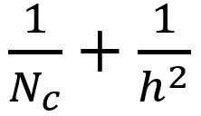
对于大多数现代架构，输出层通常具有许多通道，例如数百甚至数千。对于这样的层（Nc >> h），则上述表达式降低至1 / h / h。这意味着对于这种渐近表达，如果使用3 x 3 filters，则2D卷积的乘法比深度可分离卷积多9倍。对于5 x 5 filters，2D卷积的乘法次数增加了25倍。
使用深度可分离卷积有任何缺点吗？当然有。深度可分离卷积减少了卷积中的参数数量。因此，对于小型模型，如果2D卷积被深度可分离卷积替换，则模型容量可以显着降低。结果，该模型可能变得次优。但是，如果使用得当，深度可分离卷积可以为您提供效率，而不会显着损害您的模型性能。
扁平化卷积
Flattened卷积是在论文《Flattened convolutional neural networks for feedforward acceleration》中提出的。直观地说，这个想法是应用filter分离。我们将这个标准滤波器分成3个1D滤波器，而不是应用一个标准卷积滤波器将输入层映射到输出层。这种想法与上述空间可分卷积中的类似，其中空间滤波器由两个秩-1滤波器近似。
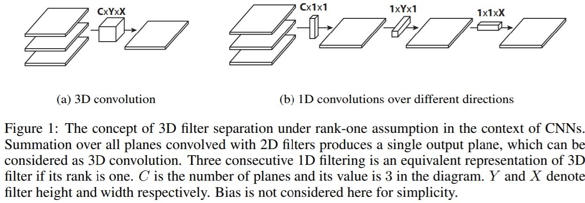
人们应该注意到，如果标准卷积滤波器是秩-1滤波器，那么这种滤波器总是可以分成三个1D滤波器的交叉积。但这是一个强大的条件，标准过滤器的内在等级高于实际中的等级。正如指出的纸 “作为现象的分类问题增加diculty，需要更多数目的前导部件的要解决的问题…在深网络学到滤池已分布的特征值，并直接施加分离到显着性的信息损失的滤池结果。 ”
为了缓解这种问题，本文限制了接收领域的联系，以便模型可以在训练时学习一维分离的过滤器。该论文声称，通过在3D空间中跨越所有方向的连续1D过滤器序列组成的有线网络的训练提供了与标准卷积网络相当的性能，由于学习参数的显着减少，计算成本更低。
分组卷积
2012年，在AlexNet论文中引入了分组卷积。实现它的主要原因是允许通过两个具有有限内存（每个GPU 1.5 GB内存）的GPU进行网络训练。下面的AlexNet在大多数层上显示了两个独立的卷积路径。它正在跨两个GPU进行模型并行化（当然，如果有更多的GPU，可以进行多GPU并行化）。
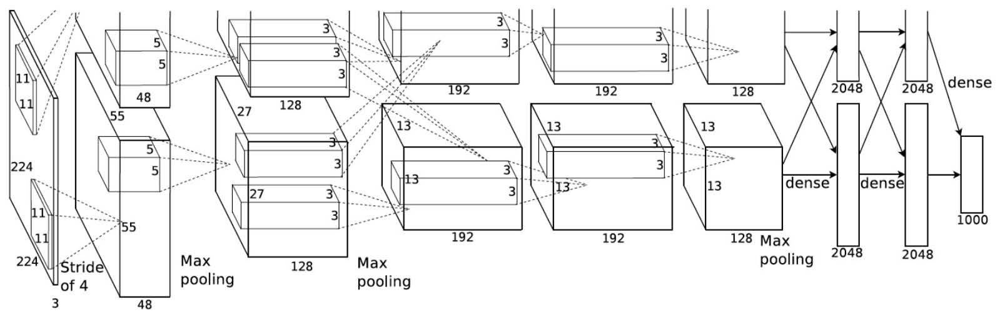
在这里，我们描述了分组卷积如何工作。首先，传统的2D卷积遵循以下步骤。在此示例中，通过应用128 filters（每个lter的大小为3 x 3 x 3），将大小为（7 x 7 x 3）的输入层转换为大小为（5 x 5 x 128）的输出层。或者在一般情况下，通过应用Dout内核（每个大小为h x w x Din）将大小（Hin x Win x Din）的输入层变换为大小（Hout x Wout x Dout）的输出层。
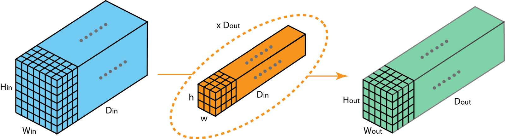
在分组卷积中，过滤器被分成不同的组。每组负责具有一定深度的传统2D卷积。以下示例可以使此更清楚。
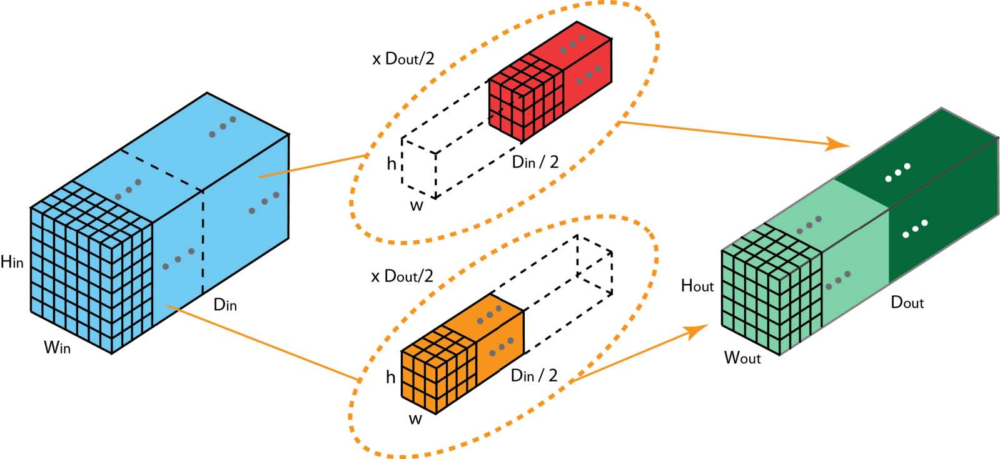
以上是具有2个filter组的分组卷积的说明。在每个过滤器组中，每个filter的深度仅为标准卷积中每个filter的一半。它们具有深度Din / 2.每个filter组包含Dout / 2 filters。第一个filter组（红色）与输入层的前半部分（[：，：, 0：Din / 2]）卷积，而第二个filter组（蓝色）与输入层的后半部分卷积（[： ，：，Din / 2：Din]）。结果，每个lter组创建Dout / 2通道。总的来说，两组创建2 x Dout / 2 = Dout通道。然后，我们使用Dout通道将这些通道堆叠在输出层中。
分组卷积与深度卷积
您可能已经在分组卷积和深度可分离卷积中使用的深度卷积之间观察到一些联系和差异。如果滤波器组的数量与输入层通道相同，则每个filter的深度为Din / Din = 1.这与深度卷积中的filter深度相同。
另一方面，每个滤波器组现在包含Dout / Din 个filters。总的来说，输出层的深度为Dout。这与深度卷积中的不同，后者不会改变层深度。在深度可分离卷积中，层深度稍后通过1x1卷积来扩展。
进行分组卷积有一些优点。
第一个优势是有效的训练。由于卷积被分成几个路径，每个路径可以由不同的GPU单独处理。此过程允许以并行方式对多个GPU进行模型训练。与使用一个GPU训练所有内容相比，多GPU上的这种模型并行化允许每步将更多图像馈送到网络中。模型并行化被认为比数据并行化更好。后者将数据集分成批次，然后我们在每批次上进行训练。然而，当批量大小变得太小时，我们基本上做的是随机性而不是批量梯度下降。这将导致较慢且有时较差的收敛。
分组卷积对于训练非常深的神经网络非常重要，如下面所示的ResNeXt。第二个优点是模型更有效，即模型参数随着filter组数量的增加而减少。在前面的示例中，lters在标称2D卷积中具有h x w x Din x Dout参数。具有2个filter组的分组卷积中的滤波器具有（h x w x Din / 2 x Dout / 2）x 2参数。参数数量减少一半。
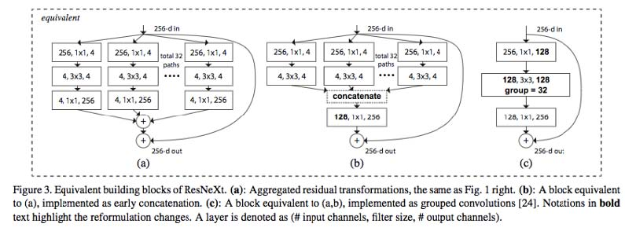
第三个优点有点令人惊讶。分组卷积可以提供比标称2D卷积更好的模型。另一个很棒的博客解释了它。这是一个简短的总结。
原因是稀疏的filter联系。下图是相邻层的相关性。这种关系很稀疏。
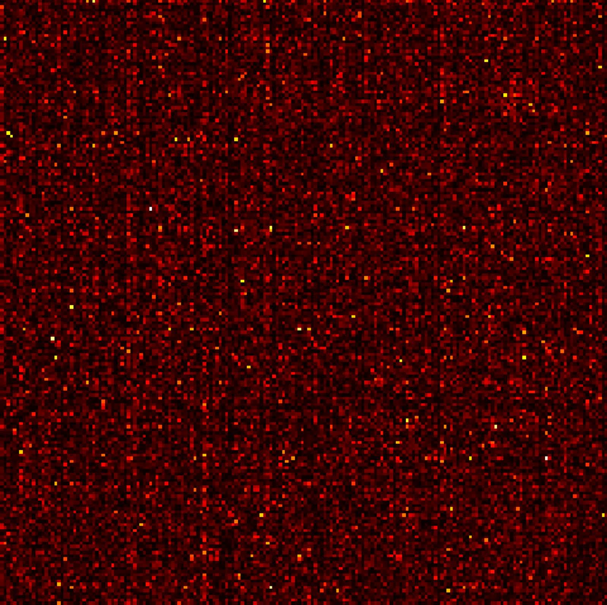
分组卷积的相关图怎么样？
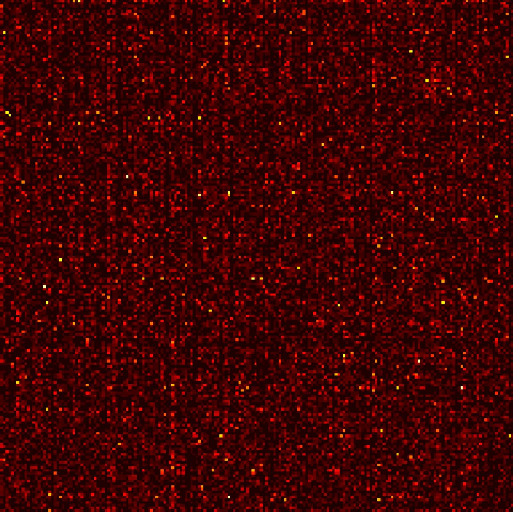
当使用1,2,4,8和16个过滤器组训练模型时，上图是相邻层的过滤器之间的相关性。该文章提出了一个推理：“滤波器组的效果是在通道尺寸的块对角结构化的稀疏学习…具有高相关性的filter在滤波器组的网络中以更加结构化的方式学习得到。实际上，不需要学习的过滤关系可以进行更长时间的参数化。在以这种显着的方式减少网络中的参数数量时，它并不容易过拟合，因此类似正则化的方法允许优化器学习更准确，更有效的深度网络。”
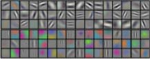
此外，每个滤波器组都学习数据的唯一表示。正如AlexNet的作者所注意到的那样，滤波器组似乎将学习的filters组织成两个不同的组，黑白过滤器和彩色过滤器。
打乱分组卷积
Shuffled grouped convolution来源于face++提出的ShuffleNet。ShuffleNet是一种计算有效的卷积架构，专为计算能力非常有限的移动设备（例如10-150 MFLOPs）而设计。
Shuffled分组卷积背后的想法与分组卷积（在MobileNet和ResNeXt中用到）和深度可分离卷积（在Xception中使用）背后的想法相关联。
总的来说，打乱分组卷积涉及分组卷积和通道打乱。在上篇关于分组卷积的部分中，我们知道滤波器被分成不同的组。每组负责具有一定深度的传统2D卷积。总操作量明显减少。对于下面的图中的示例，我们有3个filter组。第一个filter组与输入层中的红色部分进行卷积。类似地，第二和第三滤波器组与输入中的绿色和蓝色部分卷积。每个滤波器组中的kernel深度仅为输入层中通道总数的1/3。在该示例中，在第一组分组卷积GConv1之后，输入层被映射到中间特征图。然后通过第二组分组卷积GConv2将该特征图映射到输出层。
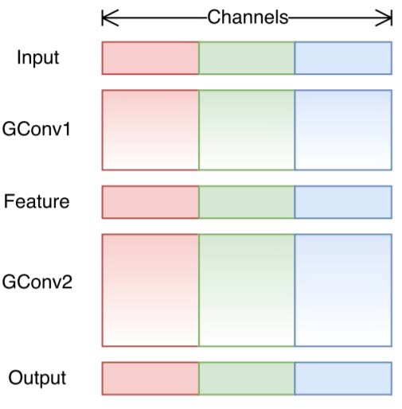
分组卷积在计算上是有效的。但问题是每个filter组只处理从先前层中传递下来的固定部分的信息。对于上图中的示例，第一个filter组（红色）仅处理从输入通道的前1/3传递的信息。蓝色filter组（蓝色）仅处理从最后1/3的输入通道传递下来的信息。因此，每个filter组仅限于学习一些特定的功能。此属性会阻止通道组之间的信息流，并在训练期间削弱表征能力。为了解决这个问题，我们应用了通道shuffle。
通道shuffle的想法是我们想要混合不同的filter组的信息。在下图中，我们在应用具有3个filter组的第一个分组卷积GConv1后得到了特征图。在将此特征图馈送到第二个分组卷积之前，我们首先将每个组中的通道划分为多个子组。我们打乱了这些子组。
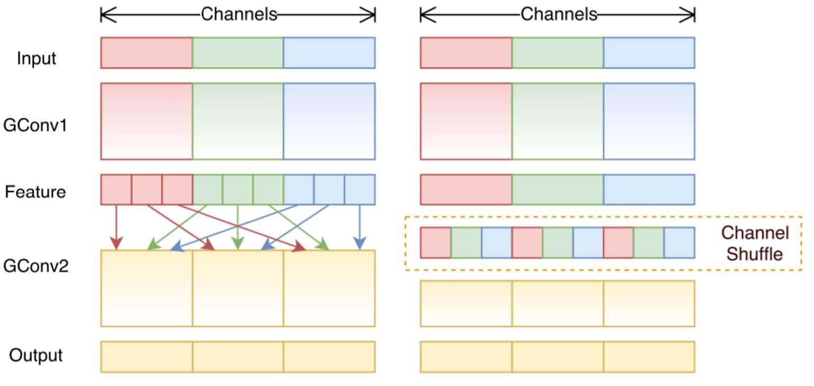
在这样的shuffling之后，我们像往常一样继续执行第二个分组卷积GConv2。但现在，由于shuffled层中的信息已经混合，我们实质上是在GConv2中为特征图层（或输入层）中的不同子组提供每个组。因此，我们允许通道组之间的信息流动，并加强表征。
逐点分组卷积
ShuffleNet论文还介绍了逐点分组卷积。通常，对于分组卷积，例如在MobileNet或ResNeXt中，分组操作在3x3空间卷积上执行，但不在1 x 1卷积上执行。shuffleNet论文认为，1 x 1卷积的计算成本也很高。它建议将分组卷积应用于1 x 1卷积。正如名称所示，逐点分组卷积执行1 x 1卷积的分组操作。该操作与分组卷积相同，只有一个修改 - 在1x1 filters而不是NxN filters（N> 1）上执行。
在ShuffleNet论文中，作者使用了我们学到的三种类型的卷积：（1）分组卷积; （2）逐点分组卷积; （3）深度可分离卷积。这种架构设计显着降低了计算成本，同时保持了准确性。例如，ShuffleNet和AlexNet的分类错误在实际移动设备上具有可比性。然而，计算成本已从AlexNet的720 MFLOPs降至ShuffleNet的40-140 MFLOPs。由于计算成本相对较小且模型性能良好，ShuffleNet在移动设备的卷积神经网络领域得到了普及。
下篇待续…